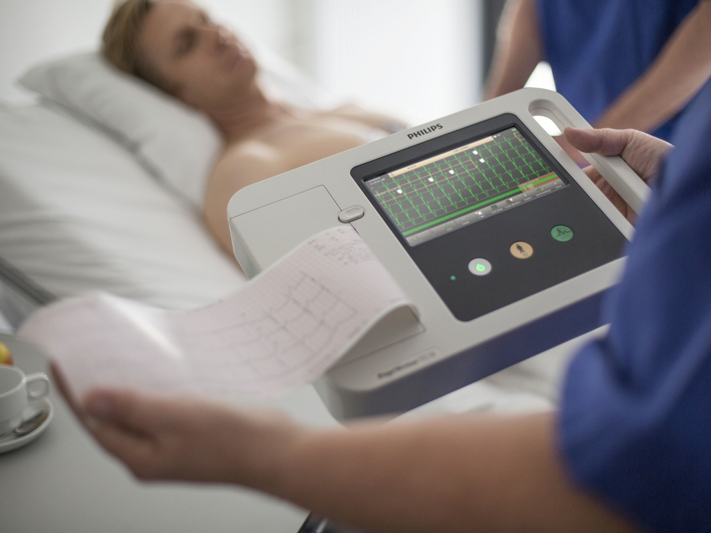

Mobile Cardiac Telemetry
Mobile Cardiac Telemetry (MCT)
Mobile Cardiac Telemetry is an ambulatory ECG monitoring service designed to transmit rhythm data during the prescribed study rather than waiting until the monitor is returned. Specialized Medical’s MCT workflow uses a wearable monitor and connected smartphone to send ECG information to the monitoring platform. Rhythm events are reviewed and communicated according to the ordering physician’s notification protocol.
What Is Mobile Cardiac Telemetry?
Mobile Cardiac Telemetry, commonly called MCT, is used when a physician wants an extended period of ambulatory rhythm monitoring with live remote data transmission. The patient wears the prescribed monitor during normal daily activities while the system sends ECG data through the connected phone. The monitoring service reviews incoming information and follows the physician-defined notification process for qualifying events.
MCT should be described accurately as a diagnostic monitoring service. It is not an emergency response system and it does not replace instructions to call 911 or seek emergency care when a patient experiences urgent symptoms.
How the Specialized Medical MCT System Works
Wearable monitor to smartphone by Bluetooth, then smartphone to the monitoring platform through available cellular or network connectivity. The phone should remain near the patient and powered during the study. The system is designed to reconnect when temporary interruptions occur, but successful transmission still depends on device placement, phone status, network availability, and patient adherence.
- Wearable monitorECG acquired on the body
- BluetoothMonitor connects to the patient’s smartphone
- Cellular / networkPhone transmits ECG data to the monitoring platform
- Monitoring platformData reviewed; qualifying events communicated per protocol
Every Specialized Medical test has LIVE operational visibility, including battery status, electrode contact / signal quality, device communication, and whether the patient appears connected. The MCT distinction is that qualifying clinical findings are also presented during the study according to the prescribed notification protocol. Do not imply that every beat is manually watched continuously by one person.
Who May Be Considered for MCT?
MCT may be considered when the ordering physician wants a longer monitoring period and live remote rhythm surveillance. Examples may include intermittent palpitations, dizziness, syncope or near-syncope evaluation, suspected paroxysmal arrhythmias, post-procedure monitoring, or other indications determined by the treating provider.
Do not promise that MCT will detect every arrhythmia or prevent adverse outcomes. State that diagnostic yield depends on the patient’s rhythm, recording quality, study duration, adherence, and other clinical factors.
Physician Notification and Reporting
Notifications follow the physician’s defined protocol and the practice’s communication preferences. An interim notification communicates a qualifying finding while the study is in progress; the final diagnostic report organizes the monitoring findings for physician interpretation and clinical decision-making.

MCT Compared With Event and Holter Monitoring
Every Specialized Medical test provides LIVE test-status visibility while the study is in progress. Specialized Medical can see operational information such as battery level, electrode contact and signal quality, whether the monitor is communicating, and whether the patient appears to remain properly connected. When a parameter falls outside the expected range, Specialized Medical contacts the patient and works with the patient to correct the issue so the study has the best opportunity to be completed successfully. The distinction between test types is not whether the study is visible live; it is when clinical findings are presented. For Holter and Extended / Long-Term Holter, clinical results are presented after the final report is generated. For Event Monitoring and Mobile Cardiac Telemetry (MCT), qualifying clinical findings are presented while the test is in progress according to the prescribed notification protocol.
| Monitoring Type | Typical Duration | LIVE Test-Status Visibility | Clinical Findings Presented | Best Suited For |
|---|---|---|---|---|
| Holter Monitoring | 24–48 hours | Yes | After Final Report Is Generated | Frequent symptoms and short-term rhythm assessment |
| Extended / Long-Term Holter | 3–14 days | Yes | After Final Report Is Generated | Intermittent symptoms requiring a longer recording window |
| Cardiac Event Monitoring | Up to 30 days | Yes | During Test — According to Prescribed Notification Protocol | Intermittent symptoms that may require patient or automatic event capture |
| Mobile Cardiac Telemetry (MCT) | Up to 30 days | Yes | During Test — According to Prescribed Notification Protocol | Patients who may benefit from continuous remote rhythm surveillance |
MCT is not automatically the best test for every patient. A short Holter study may be appropriate when symptoms are frequent. Long-Term Holter may be appropriate when extended full-disclosure recording is desired and clinical results can be presented after the final report. Event Monitoring may be appropriate when episodic capture and in-progress presentation of qualifying findings are desired.
Patient Responsibilities During an MCT Study
- Keep the phone charged, powered on, and near the body
- Follow the device placement instructions
- Record symptoms when directed
- Avoid changing settings on the monitor or phone
- Contact support when the system indicates a problem
Follow the bathing instructions that match the prescribed equipment. The system should not be treated as waterproof unless the exact configuration is verified for that use.
Phone proximity and charging
The connected phone is the transmission gateway. Keep it powered, charged, and within the operating range stated in the patient instructions — walls, distance, device placement, and interference can affect the connection.
Keep the phone within the operating range stated in patient instructions.
Emergency symptoms
Patients with chest pain, severe shortness of breath, fainting, stroke symptoms, or other urgent symptoms should follow their physician’s instructions and seek emergency assistance — call 911 — rather than waiting for a monitoring call.
Frequently Asked Questions
Both MCT and Holter provide LIVE operational visibility during the study so Specialized Medical can monitor battery status, electrode contact / signal quality, device communication, and whether the patient appears connected. MCT can present qualifying clinical findings while the study is in progress according to protocol. Holter clinical results are presented after the final report is generated.
The ordering physician determines the prescribed duration, which may extend up to 30 days depending on the clinical need and program configuration.
Yes. In the Specialized Medical workflow, the connected phone serves as the gateway that transmits ECG information to the monitoring platform.
The phone should remain near the patient and within the operating range specified in the patient instructions. Walls, distance, device placement, and interference can affect the connection.
No. Notifications are made according to the prescribed criteria and practice protocol, not for every normal variation or automatically detected event.
No. MCT is a diagnostic monitoring service and is not a substitute for calling 911 or seeking emergency care.
A physician may prescribe MCT after a procedure when ongoing rhythm surveillance is clinically appropriate.
The system is designed to reconnect and transmit when service becomes available, but the exact result depends on the device, phone status, stored data, and network conditions.
Patients must follow the bathing instructions provided for the specific monitor and electrode configuration.
The report may include rhythm summaries, event information, representative ECG strips, burden measurements where applicable, and a physician interpretation area.
Request an MCT Workflow Demonstration
Specialized Medical can review the practice’s current ambulatory cardiac monitoring workflow, explain the available service options, and demonstrate how enrollment, monitoring, reporting, and physician review can be configured.
Prefer to talk? Speak With a Cardiac Monitoring Specialist — 1-855-SPEC-MED (1-855-773-2633)
Specialized Medical provides diagnostic ambulatory monitoring. The system is not a replacement for emergency medical services. Patients with urgent symptoms should call 911 or follow emergency instructions rather than waiting for a monitoring call.
Related Cardiac Monitoring Resources
Diagnostic Service Disclaimer: Specialized Medical provides ambulatory cardiac monitoring services and diagnostic information for review by qualified healthcare providers. The service does not replace physician judgment, emergency medical services, or instructions to call 911 when urgent symptoms occur.